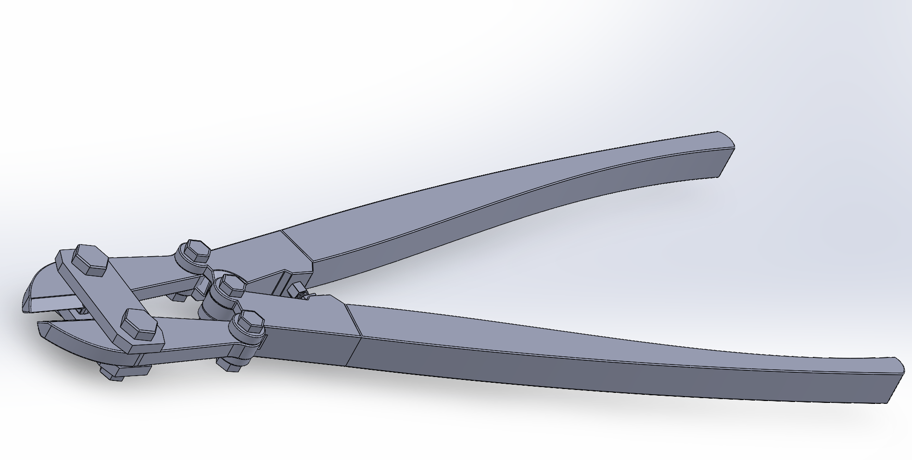

← Back to Home
Bolt Cutter Mechanical Analysis
Mechanical Engineering Project | SolidWorks + Static Analysis
Abstract
This lab analyzed the mechanics of a bolt cutter and determined how it produces a large cutting force from a small human input. Using static equilibrium, the shear force at the blade was calculated to be 16,696.7 N, approximately 67 times the input force of 250 N.
Introduction
The bolt cutter demonstrates mechanical advantage by amplifying human input force through a lever system. Long handles and pivot joints allow a small force to generate a much larger cutting force at the jaws.
How It Works
A bolt cutter uses long handles, pivot joints, and cutting jaws to amplify force. When force is applied at the handles, torque is created about the pivot and transmitted through linkages to the cutting jaws.

SolidWorks Assembly Model of Bolt Cutter
This mechanical system converts human force into a highly amplified cutting force through lever-based mechanical advantage.
Static Analysis
Objective: Determine shear force at blade using 250 N input force.
Key Result: Shear force = 16,696.7 N
Mechanical Advantage: ~67x amplification of input force
Free body diagrams and equilibrium equations were used to determine force transmission through the system.
SolidWorks Model Used for Geometric Reference
Conclusion
This project demonstrated how a simple mechanical system can significantly amplify human force. The bolt cutter achieved a mechanical advantage of approximately 67x, converting 250 N input force into 16,696.7 N at the cutting blade.